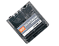

| SoundsGood mp3 player
Trying to find an mp3 player that met my requirements was hard. It shouln't have been but it was. I wanted one with 96MB, that used USB to transfer files, and that wasn't too big. This combination ruled out most - including the SoundsGood. The original favourites were one of the Sony ones, or the Panasonic E-wear ones. Both of these ranges were good except that both had restrictions about how many times a song could be copied onto the media, and both transferred songs into their own formats before uploading onto the players - according to some reviews I read, this meant it would take 20 minutes to convert and transfer an album. Initially I didn't want a springboard one - mainly as I didn't want to get more tied to the visor. However, the SoundsGood mp3 player looked pretty good. The decision was helped by the existance of the Energy Clip - a battery pack you can slip the SoundsGood into. This means that you don't have to carry the Visor with you everytime you want to listen to music. This had a lot to do with my decision. It has 64MB of storage, takes about 5 minutes to transfer songs on, stores 90 minutes of music at 96bps (I listen mostly on tubes so the reduction in quality isn't so noticable) and uses standard MP3 format. The desktop interface is pretty good and simple. It also comes with a copy of MusicMatch which is handy. The interface on the visor is fairly simple - normal play, stop, skip etc buttons, a display of the track details, length etc, volume control. The module itself has the headphone socket, forward, backward, stop and play buttons and a volume control - this is what you use to control it when it's in the optional Energy clip. So far I'm impressed - it works well and doesn't appear to suck too much battery power. That said, I have been using it in the Energy Clip mostly. Another great gadget for the Visor :-) |
 Related Links:
|
|
Back to index page |